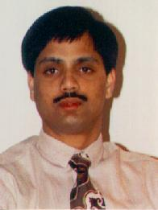

WEEKEND THOUGHTS # 13

Namaskar,
This week we again have a very nice philosophical article from Dr. Satchi Panda from Milwaukee. He discusses about life, happiness, human wants, and their relationship to satisfaction. In a very simple manner the writer brings out small experiences in his life to indicate how man's wants progress with life, and how man is continuously searching for the ever ellusive contentment and satisfaction. Everyone has goals in life, but is there a limit to what someone wants? We are always looking for something which we don't have, instead of being happy with what we do. As they say, "I was complaining about my shoes until I came across a man who had no feet." If we could be content and happy with whatever we had, life would be very satisfying and stress free. I remember, when I was a child my mother hung a board on the wall of my room and to this day I remember the writing on the board. It said in very simple terms: "Be happy with whatever you have for there is no want where the mind is satisfied." If only I could live to these principles.
Here is the article for you. Hope you enjoy it and learn from it. We had two reviews for the article and both of them were pretty long. Hence, I have just included one of them. The other review will be posted later as a followup. Thank you and hope you have a good weekend.
Name: Satchi Panda Address: 4210, S. Ravinia Dr., #201 Milwaukee, WI 53221 email: panda@sol.med.ge.com Education: School: 6 different schools in Orissa. I.Sc.: BJB college, 1982 B.S.: Mechanical Engineering, UCE, Burla, 1986 M.Tech: Ocean Engineering, IIT, Madras, 1987 Ph.D.: Ocean Engineering, Univ. of Rhode Island, 1992 Work As a Research Scientist at Florida Atlantic University, Experience: worked on developing sonar equipments to image sea floor. Also tried treasure hunting under the sea with those equipments - never found a pot of gold - got frustrated and changed my field to Medical Imaging. Currently working for General Electric Medical Systems in Milwaukee, WI. Family: Married to Baishali Rath Hobbies: Photography Travelling Camping and Hiking Scuba diving Anything that gets my adrenalin pumping and heart to skip a beat. My Dream: I dream of a world without war, violence, crime, and poverty. In such a world, I live in a little town where everybody is my friend, and where life is peaceful yet exciting.
To want or To be Happy
We all wish we knew where to find "happiness": that abstract noun which eludes many of us throughout our life. Some do Yoga atop the Himalayas looking for it, whereas a few others spend their lives doing humanitarian work. But, most of us try to derive happiness from material possessions, professional achievements and social status. Do we succeed in finding happiness through materialistic gains?
I am going to walk through some parts of my life to show you how my expect- ations and wants have evolved over time. While I was studying engineering, it seemed to me that all I needed to be happy and well-settled in life was, a job in a good public/private company. I would have a small house with a colorful garden and a loving wife.... What more could a man ask for! (this dreaming youngster didn't know any better at that time.)
Well, expectations changed. I started aspiring about coming to US for a good and happy life, and eventually came to US for a higher studies. But, being in US didn't make me any happier. One summer, I had gone to India for a visit. I was visiting my friend in Damonjodi, a quaint and picturesque town. He had a secure job, and lots of friends, who were nice and hospitable. I envied his easy and peaceful lifestyle, and thought I would be very happy leading such a life. To my surpise, later in the day my friend told me, "You are really lucky. You are in US, and are going to earn a lot of money. I am stuck here in this remote place, with little to look forward to". Grass is always green on the other side, I thought.
While I was completing my doctoral work and looking for a job, getting a job with 40/50K salary seemed like a dream. This dream did come true. So am I happy now? Of course not, I want more of everything - I want a 4 bedroom house in a posh locality, a Mercedez-Benz convertibe, and a 6-figure bank balance! I may have these things some day, but, probably, I would still be unhappy since I would be craving for a mansion, a Rolls-Royce, an island of my own, etc. Is there an end to all this? I often feel there will never be one. It is rightfully said in Oriya "Asha baitaranI nadI" (wants are like a never ending river). In search of happiness, we may be running endlessly after an illusion.
What is it that makes us happy or unhappy? If we earn more it makes us happy (although for a shortwhile), whereas, if our neighbor does, it makes us jealous and unhappy. It's all relative. Owning a Honda or Toyota in India gives great satisfaction and pleasure, whereas the same in USA is a very ordinary matter. We compare ourselves with our colleagues, friends, neighbors, and ONLY with those we think are better off than us. So we are bound to feel dissatisfied and unhappy. When things are not going well, maybe we should compare ourselves to those who have barely enough to meet basic necessities of life. When a person has already undergone hardships in life, he appreciates life better as he often compares his present with his difficult past.
For most people happiness lies in what we don't have. Once we achieve/acquire something it looses its charm. Anytime I have obtained the luxuries of life, it has been an anti-climax since they have never delivered the happiness they once held for me. Sometimes I look back in time and relish the good old days - days, I never felt good about when I was living through them.
Sometimes I wonder what it is in material belongings that attracts us! Does the food taste better when eaten from a silver plate? Does a Ferrari take us to better places? Do these things ever deliver happiness? How many of the rich and famous we know lead a happy, peaceful life? If I am not happy now because everything is ordinary about me, I won't be happy when I become rich and famous. I feel (once the basic necessities in life are met) happiness resides in our mind - happiness lies in being content.
At a point in the early part of our life, may be we should pause and ask ourselves what is the minimum we need in life to be happy. And once we obtain that name, fame or wealth, we should be happy instead of raising our wants to another height. We should still try hard to climb the ladder of our aspiration, but the outcome should no longer dictate our happiness.
A dilemma I face with this philosophy is how to be happy about what and where I am at a given moment, yet aim high and try my best to reach my goal in life. For example, consider a person who has the potential to be a Nobel laureate. One scenario is: this person becomes satisfied and content when he receives an university award, and stops trying hard, and retires as a professor. It would be a waste of his talent. The other scenario is: this person is discontent and unhappy with his small achievements during his mid-career, keeps trying hard, and at the end of his long, arduous career receives the Nobel prize - only then does he feel happy. This situation is also equally ironic. The ideal scenario for this person would be to feel happy during every stage of his career, still keep trying hard to achieve his life's dream, and eventually receive the Nobel prize. In line with this example, I need to learn to derive self-satisfaction and happiness from my current state and the fact that I am trying my best. I will achieve some/all of my goals depending on my ability, perseverance and luck. It is almost impossible for me to practice Gita's teaching "Karmanye badhIkarasthu, na phaleshu kadachana", but I want to get close to doing that.
(This article relates only to "materialistic happiness", not to other forms of happiness derived from love and affection, spirituality, social work, etc.)
Results bring you temporary joy or sorrow. Once again, one has to set off a lot of "actions", in the performance of one's duties, and one does not have time to dwell upon the result of the previous action, whatever that might have been. The result gets deeply embedded in the sub-conscious, and is there for the sole purpose of correcting the mistake next time the same action is repeated. By thinking about it while performing the action, the consious mind starts getting disturbed between the thought and the subconsious response.
The next stage is to do with the result itself. The result may be success or failure in simple terms of goal achievement. In the complex examples of performing one's duties, the result may not be as simple as success or failure. Complex duties are often conflict ridden. Geeta deals with conflict in a separete chapter. Conflict of this sort is difficult to examplify. If you remember the movie "The bridge on the river Kwai", Alec Guiness, who stived for keeping the spirits up of his men, gets into action of building a bridge while his allies, try to blow it up. He gets so involved that he tries to prevent its demolition. Only when he is shot he mutters, "what have I done?".
The "dilemma" the author presents is basically a conflict. "Karmanye.." says that you perform the duty without aspiring for the fruits. It does not say you are not entitled to enjoy the fruits! Or feel unhappy if the fruits are not to your expectation. The inner meaning is attach importance to performance of duty itself, rather than thinking about the fruits in advance and savouring them in anticipation.
About enjoyment also, Geeta says one should enjoy what comes naturally his way and accept it without remose. There is a lot of common sense in this. If one wants to enjoy one's own belongings, there is no harm of anykind. This includes material wealth too. If may be as abstact as the contentment of a new discovery or celebration of a new born or any such thing. The limit is it should be your own by right.
Material wealth is related to Nature. Geeta says in a very indirect manner that one should take from nature the amount one needs for living. It is a profound and broad based statement. The interpretation depends on individual perception. If one's not honest, one may end up consuming nature far more than necessary and justify that it is one's right. This is precisely where things go wrong. One feels it in the guts, yet he/she may admit differently in public. This is one possible reason why fruits of success sometimes taste awful. This also happens when you try to grab another's fruits. This is happening in our subconsious nature and we are not consciously aware of it.
Most other religions propose similar theories in their own way. For example, envy is regarded as a negative emotion not only by religions, but also by philosophy and psychology. It makes one feel inadequate and one often ends up not being able to enjoy what he/she has. Common sense? Yes. The Geeta is full of it. So is the Bible. Or Koran. Or whatever you may name. The difference is that these "home truths" are based on thorough understanding of the true human nature and therefore very apt. That's why all modern religions from Hinduism onwards place a stress on "Self-realisation" as a spiritual attainment, and one's ultimate goal. Performance of duties is a path to this goal. Attachement to the fruits of action, "Karma", bring about joy or sorrow or some emotion.
It's a very nice portrayal of another soul searching for happiness in the everyday life of a common man (or a common person to be politically correct). The author has to be commended on his attempt to self-analyze in his quest for the ever elusive "happiness"; because that is what shows us the true place to find happiness; in our inner-self.
I am not sure, what the author means by "materialistic happiness" and if there are other different types of happiness! Because happiness, to me is a state of mind and there are many avenues to achieve it. Why should we assume that "materialism" brings happiness/unhappiness. To me, it is how one measures if he/she is happy or not.
As the author has very successfully pointed out,when we have a Chevrolet,we want a Honda/Mazda; when we have a Honda, we want a Lexus/BMW/Mercedes. Aren't we changing the metric of our happiness all by ourselves. If one's really happy with Honda, why this desire for a Mercedes! You don't have to be Gautam Buddha, but if we just remember His words "kAmanA hi binAsa'ra kArana"! Everytime you ride this wave of desire you are bound to fall into the trough of frustration/gloom/sadness.
So, are there other ways to be happy? Plenty, I should say. There are so many simple ways to catch this, what seems to be so evasive, happiness. Just make time for something you like to do, something you enjoy; either alone or with friends and/or family members. Reading, music, travelling- there must be something that you like.(assuming you are not the Theodore Kaczynski type) I have found that "natural beauty" brings one real peace of mind. And last but not the least, there's no greater sense of joy and happiness than from helping other. The definition and scope of the two words "help" and "other" is so vast that I dare not delve further into it.
But my point is, just indulge yourself in these activities instead of thinking about buying better things, comparing your wealth with your friend, your neighbour, your relative and making yourself unhappy in the process.
The second part of the author's article subtitled "dilemma" is really interesting, but at this point I'll refrain myself from commenting on that simply because of I have already consumed a lot of space and time babbling about my definition of happiness. Hope other learned members of Ornet would come out with their valuable opinion on the topic and enlighten us.
"Don't Worry, Be Happy"
Your comments are always welcome...

 Satchi Panda
Satchi Panda


![[IMAGE]](mult.gif)
![[IMAGE]](jag.gif)
Ride back to Home Page...
![[IMAGE]](rath.gif)